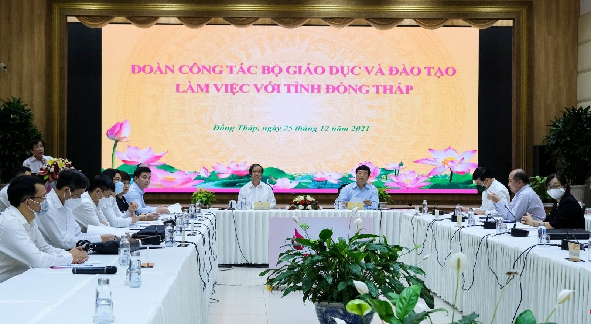
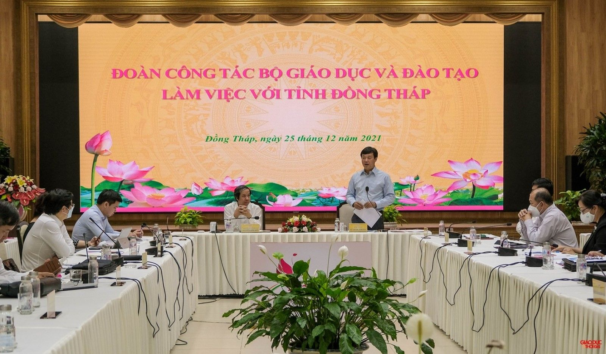

Bộ trưởng Bộ Giáo dục và Đào tạo Nguyễn Kim Sơn làm việc tại tỉnh Đồng Tháp
Chiều ngày 25/12/2021, Đoàn công tác của Bộ Giáo dục và Đào tạo (GDĐT) do Bộ trưởng Nguyễn Kim Sơn dẫn đầu đã có buổi làm việc với tỉnh Đồng Tháp về tình hình GDĐT; việc thực hiện kế hoạch năm học 2021 - 2022 và triển khai Chương trình GDPT 2018.
Tham gia buổi làm việc có đại diện lãnh đạo các Vụ, Cục, Văn phòng Bộ GDĐT. Về phía tỉnh Đồng Tháp có ông Lê Quốc Phong, Bí thư Tỉnh ủy; ông Phạm Thiện Nghĩa, Chủ tịch UBND tỉnh; ông Đoàn Tấn Bửu, Phó Chủ tịch UBND tỉnh; lãnh đạo Sở GDĐT và các Sở, ngành của tỉnh.

Phó Chủ tịch UBND tỉnh Đồng Tháp Đoàn Tấn Bửu cho biết: Năm học 2020 - 2021, tuy bị tác động nặng nề của dịch Covid-19 nhưng ngành Giáo dục Đồng Tháp đã hoàn thành tốt nhiệm vụ năm học, căn cứ trên các chỉ số tổng hợp, so sánh được, ngành Giáo dục Đồng Tháp đang xếp trong nhóm 5 Khu vực và nhóm 20 của cả nước. Năm học 2021 - 2022 diễn ra trong bối cảnh dịch Covid-19 diễn biến phức tạp, kéo dài; việc tổ chức thực hiện các nhiệm vụ năm học là chưa có tiền lệ. Về các hình thức tổ chức dạy học, tỉnh ưu tiên triển khai dạy học trực tuyến cho học sinh, học viên từ lớp 5 đến lớp 12; giao nhiệm vụ học tập cho học sinh lớp 1 đến lớp 4; hướng dẫn cha mẹ chăm sóc con em tại nhà đối với trẻ mầm non. Đầu tháng 9/2021, toàn tỉnh còn tên 15.000 học sinh, học viên chưa có thiết bị học trực tuyến. Hưởng ứng Chương trình “Sóng và Máy tính cho em”, cả hệ thống chính trị của tỉnh đã vào cuộc, kết quả đã vận động được 11,881 tỷ đồng và trên 5.000 điện thoại thông minh, máy tính bảng, máy tính bàn. Đến ngày 25/10/2021, tất cả học sinh, học viên từ lớp 5 đến lớp 12 đã có đủ thiết bị và tham gia học trực tuyến. Hiện tình hình dịch Covid-19 trên địa bàn tỉnh đã cơ bản được kiểm soát nhưng nguy cơ bùng phát dịch vẫn còn. Do vậy, việc tổ chức dạy và học trực tiếp phải thận trọng và thực hiện theo từng bước. Dự kiến đầu tháng 01/2022, UBND tỉnh sẽ xem xét từng bước mở cửa lại trường học, trước tiên là khối lớp 12, 9 và tiếp tục từng bước mở rộng các khối lớp còn lại
Đối với việc triển khai đổi mới Chương trình, SGK giáo dục phổ thông, HĐND tỉnh thông qua Nghị quyết về Chương trình đảm bảo cơ sở vật chất thực hiện chương trình giáo dục mầm non và giáo dục phổ thông trên địa bàn tỉnh với tổng kinh phí đầu tư trên 4.000 tỷ đồng. UBND tỉnh đã phê duyệt chủ trương đầu tư 3 dự án mua sắm thiết bị dạy học tối thiểu phục vụ cho dạy học ở các lớp thay sách (bổ sung cho lớp 1; mua sắm mới cho lớp 2 và lớp 6), với tổng kinh phí là 120,93 tỷ đồng...
Ông Phạm Thiện Nghĩa, Chủ tịch UBND tỉnh Đồng Tháp kiến nghị ngành Giáo dục quan tâm đẩy mạnh dạy học ngoại ngữ, đặc biệt là nâng cao trình độ tiếng Anh cho học sinh; Quan tâm hợp tác quốc tế trong lĩnh vực GDĐT tại địa phương; Cần có chính sách nhà ở cho đội ngũ nhà giáo; Cơ chế tuyển giáo viên cần mở hơn, nhất là đãi ngộ, đặt hàng… Hiện cơ chế xã hội hóa giáo dục tỉnh còn khó khăn, cần có cơ chế thoáng hơn trong thời gian tới.
Bộ trưởng Bộ GDĐT Nguyễn Kim Sơn phát biểu tại buổi làm việc
Bộ trưởng Nguyễn Kim Sơn ghi nhận những thành quả đạt được trong thời gian qua của ngành Giáo dục tỉnh Đồng Tháp. Bộ trưởng nhấn mạnh, các địa phương có vai trò rất quan trọng trong việc triển khai Chương trình GDPT mới. Đặc biệt là năm 2022, ngành Giáo dục cần phải vượt qua thách thức dịch bệnh. Trong ứng phó dịch bệnh, khôi phục kinh tế xã hội, cần tiếp tục quan tâm, có giải pháp đưa học sinh trở lại trường an toàn và có những quyết sách mạnh mẽ hơn. Khẩn trương xác định năm 2022 là năm củng cố kiến thức, kỹ năng cho học sinh sau thời gian dài dạy học trực tuyến, xem là trọng tâm số 1. Cần có giải pháp ứng phó với dịch bệnh khi trở lại học trực tiếp một cách bền vững. Nhân việc triển khai dạy học trực tuyến do dịch bệnh, đẩy mạnh chuyển đổi số trong ngành Giáo dục một cách bài bản, lâu dài. Tiếp tục thực hiện, chuẩn bị tốt cho các bước triển khai tiếp theo kế hoạch đổi mới giáo dục phổ thông; Quan tâm vấn đề kiên cố hóa trường học; Phổ cập mầm non, đặc biệt lưu ý đủ trường, đủ giáo viên cho các trường mầm non, nhà trẻ ở các khu công nghiệp, và phải coi đây là việc làm song song với việc phát triển các khu công nghiệp.Tỉnh tiếp tục quan tâm xã hội hóa trong giáo dục, đẩy mạnh xây dựng xã hội học tập, quan tâm hệ thống GDTX, Trung tâm học tập cộng đồng, hệ thống thư viện và các hệ thống học tập khác...

Bí thư Tỉnh ủy Đồng Tháp Lê Quốc Phong phát biểu tại buổi làm việc.
Ông Lê Quốc Phong, Bí thư Tỉnh ủy Đồng Tháp tiếp thu các ý kiến của Bộ trưởng Nguyễn Kim Sơn cùng đoàn công tác. Bí thư Tỉnh ủy khẳng định, nâng cao chất lượng giáo dục là nhiệm vụ trọng tâm, góp phần nâng cao chất lượng nguồn nhân lực, tạo động lực thúc đẩy phát triển kinh tế xã hội của địa phương. Tỉnh Đồng Tháp sẽ nỗ lực thực hiện các nhiệm vụ, đặc biệt chú trọng chất lượng giáo dục thực chất./.